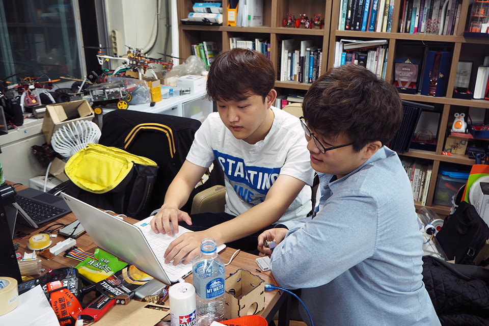
미스터 동아리방에는 로봇을 만들 수 있는 장비와 부품이 상시 준비되어 있습니다. 또한 로봇 제작에 미숙한 신입생들을 위해 학습부장이 직접 로봇 제작 교육도 실시하고 있습니다.
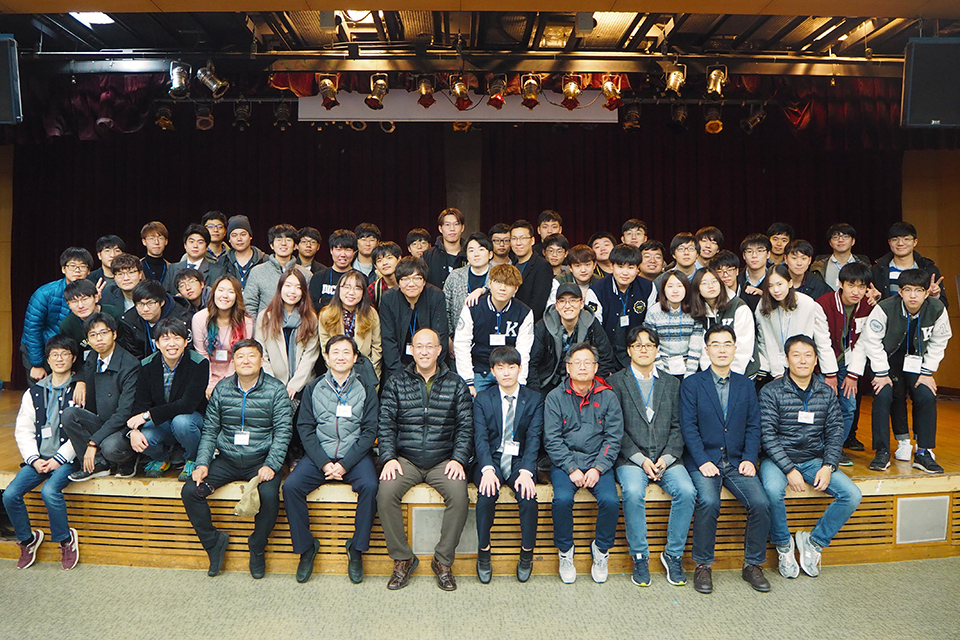
미스터는 매학기마다 동아리 총동문회를 진행합니다. 선배님들이 카이스트로 직접 오셔서 선후배간의 만남이 이루어지고, 1년 간의 동아리 활동을 발표하는 시간을 가집니다.
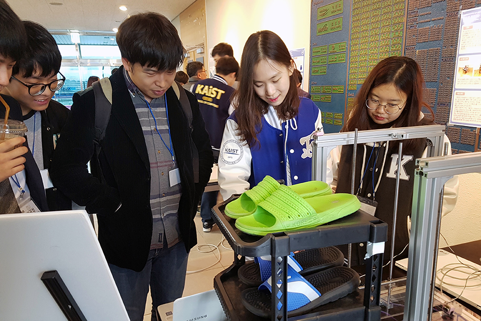
매년 가을, 1년 동안 제작한 로봇을 전시하고 있습니다.
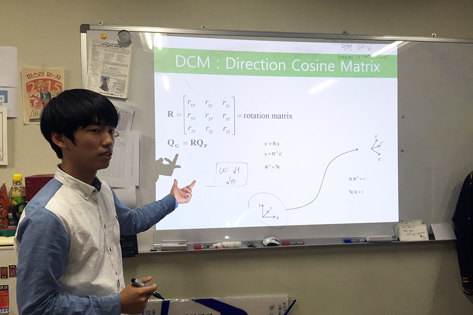
동아리원들이 각자 돌아가며 격주로 세미나를 진행하여 서로의 프로젝트에 대한 지식과 정보를 공유합니다.
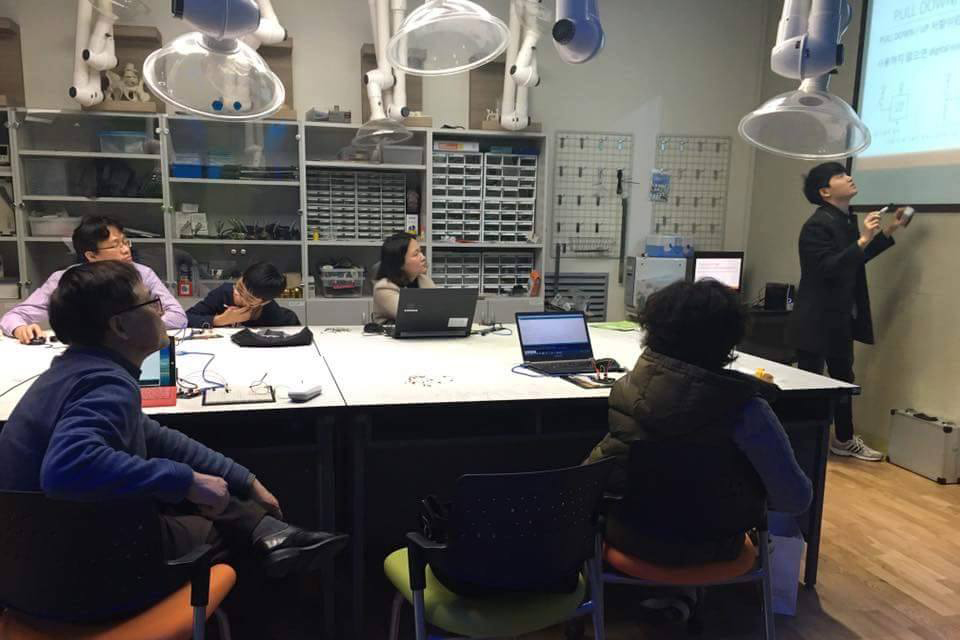
현재 많은 동아리원들이 학교 외부에서 과학관, 초등학교 강사로 활동하고 있습니다. 또, 매학기 KAIST 교양필수 과목인 인성/리더십 III <로봇 만들기>를 진행하고 있습니다.
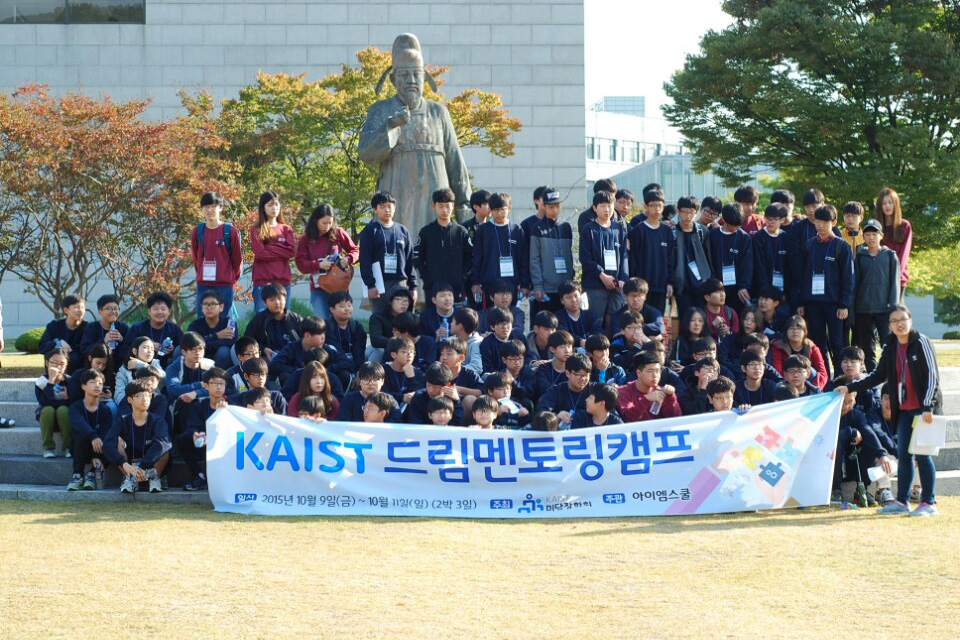
미담장학회 멘토링 캠프에서 실시되는 로봇 제작 체험 프로그램에 동아리 부원이 멘토로 참여하면서 동아리 차원에서 로봇 교육 활동을 진행하고 있습니다.
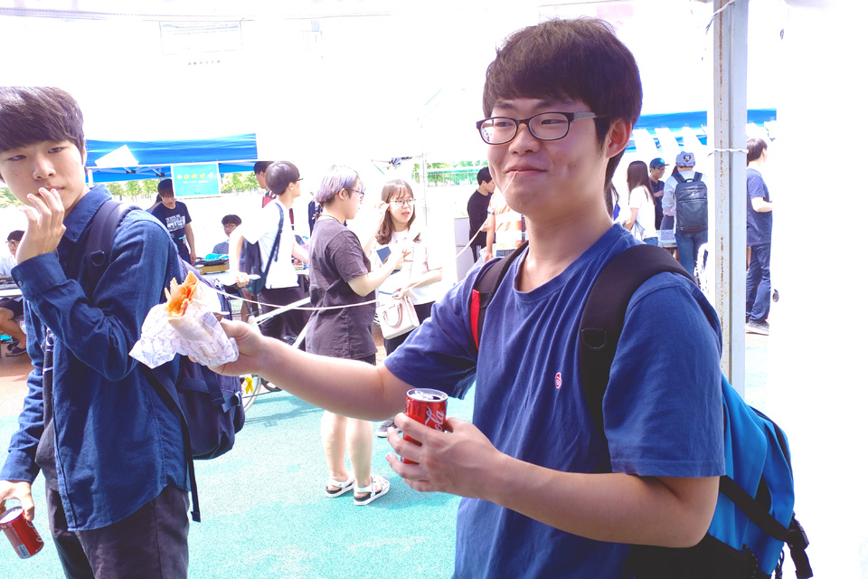
카이스트 축제 먹거리 부스에서 매년 "미스터 피자"라는 프로그램을 진행하고 있습니다. 축제를 준비하면서 동아리원들과의 친목을 도모하고, 먹거리 부스를 통해 벌어들인 돈으로 부족했던 장비를 살 수 있습니다.
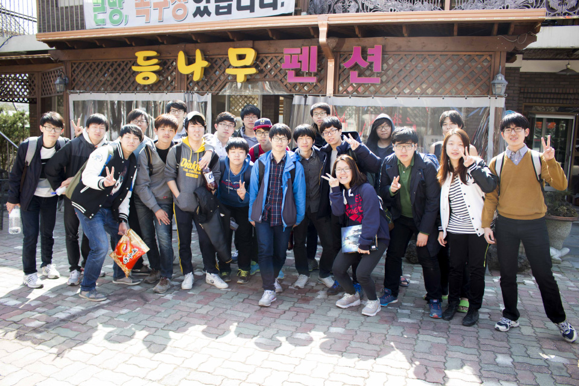
미스터에서는 매학기마다 MT를 가며 동아리원들과의 친목을 다집니다.
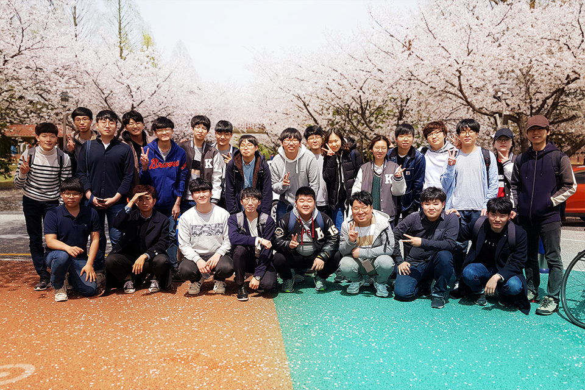
매년 4월에는 KAIST 봄학기 행사 중 하나인 딸기 파티를 동아리 차원에서 진행하고 있습니다.
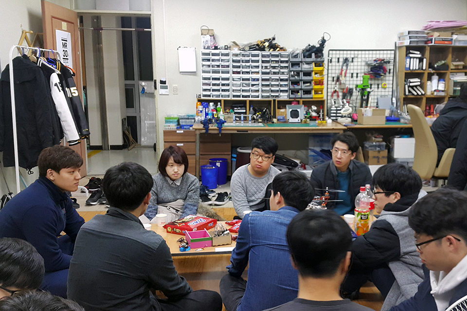
오픈 동방 및 설명회를 통해 신입생들에게 미스터의 활동에 대해 알리고, 면접을 통해 신입부원을 선발합니다.
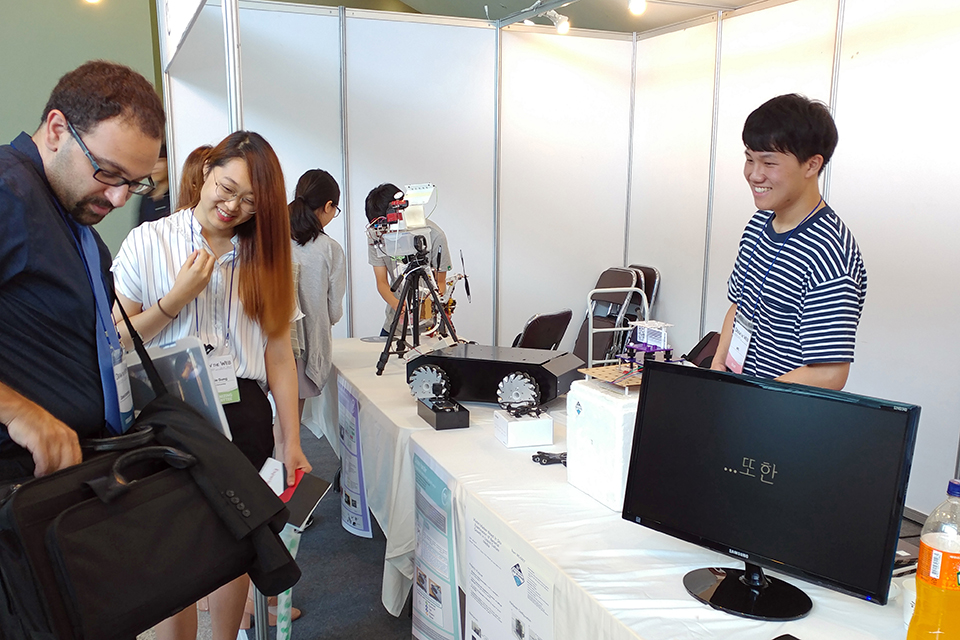
ICISTS, 별축제, 사이언스페스티벌 등 다양한 대외 활동에도 참여하고 있습니다.